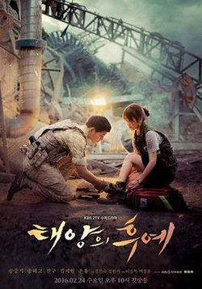
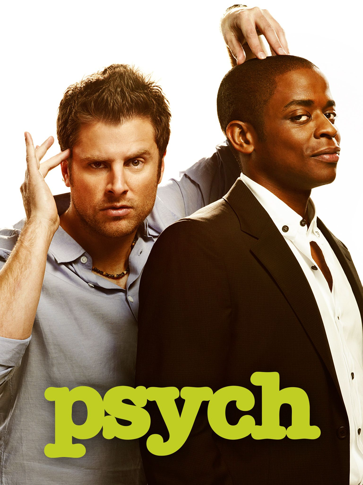
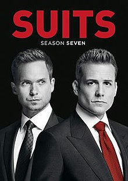

The Dark Knight

The Dark Knight by Christopher Nolan is an absolute masterpiece and my favorite movie of all time, solely because of Heath Ledger's legendary performance as the Joker.
Descendants of the Sun

Regarded by many as the best Korean drama series of all time, Descendants of the Sun was one of my first forays into the world of Asianovelas and has kept me hooked ever since.
Psych

Psych was the one show that everyone in my family could agree to sit down and watch together because it was so damn funny and starred a genuinely hilarious black lead.
Gone With the Wind

Before cheesy romance movies, there was the OG Gone With the Wind with all of the cheesy romance tropes before they officially became cheesy.
Suits

Suits was the first drama series that I ever watched, which says a lot because most of the shows I had watched up until then were either cartoons or actiony.